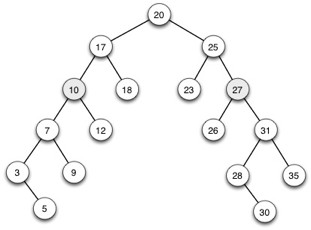
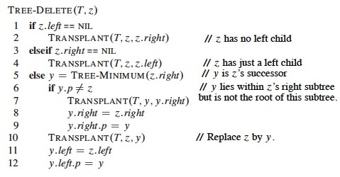

1. Show that if a node in a binary search tree has two children, then its successor Y has no left child and its predecessor has no right child. (The proofs are symmetric. Hints: Rule out where the successor cannot be to narrow down to where it must be. Draw Pictures!!!)
(a) Prove by contradiction that the successor Y cannot be an ancestor of X, so Y must be in a subtree.
(b) Identify and prove the subtree of X that successor Y must be in.
(c) Show by contradiction that successor Y cannot have a left child.
(d) Indicate how this proof would be changed for predecessor.
**2. ** Delete the nodes with keys 10 and 27 from this Binary Search Tree, indicating for each case what “if/elseif” block is executed. (You will need to apply the cases carefully to get this right: refer to the text or web notes. “Eyeballing” it may lead to a legal tree that would not result from the code.)

(a) Lines executed in deletion of 10:
(b) Lines executed in deletion of 27:
